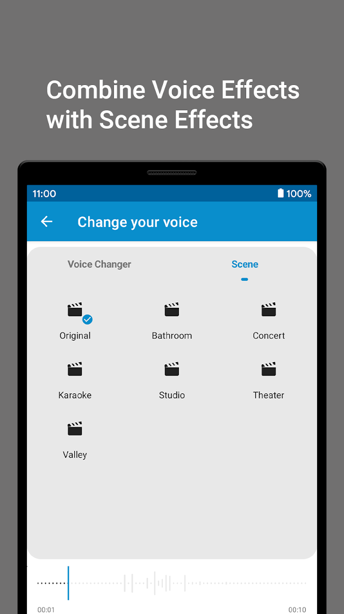

ANDROID / RECORDED AUDIO
Super Voice Changer & Effects
Change the voice
in a recording.
Record a clip or open an audio file, add voice and scene effects, then share the result.
For recorded clips and imported audio files.

A CLIP IN, A NEW SOUND OUT
Three steps to a different voice
- 01
Record or open
Record a new clip in the app, or open an audio file you already have.
- 02
Choose your effects
Try a voice effect such as Robot or Helium. Add a scene effect, such as Bathroom or Concert, if it fits your clip.
- 03
Preview and share
Listen to the result, then share it through a compatible app.
BEFORE YOU START
A few useful details
Can I use an existing recording?
Yes. You can record audio in the app or open an audio file. Try your file in the app before relying on it for a larger project.
Can I combine a voice effect and a scene?
Yes. Apply a voice effect to the clip and choose a scene effect to change how it sounds.
Does this guide cover live calls or game chat?
This guide covers effects applied to recorded audio and imported files. It does not provide a workflow for live phone calls or game microphones.